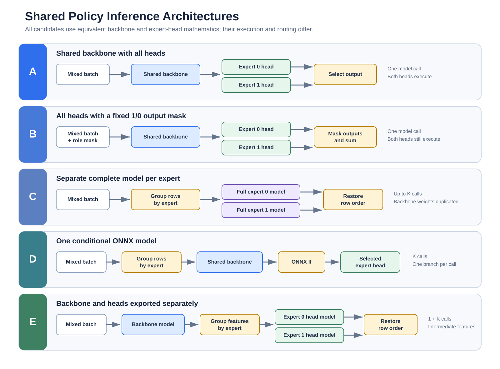

All Heads
- Both expert outputs
- Batch sizes 1 and 2
Adaptive NPCs for AMD Schola
SAC, TD3 and PPO inside Unreal
Developers configure their NPC task through Schola.
RLtools learns from gameplay outcomes in C++.
Before D3
We demonstrated native learning in small, task-specific prototypes.
AdaptiveTag learned a route preference.
The SAC chase prototype learned interception.
These remain useful gameplay demonstrations.
A new NPC task needed a general Schola integration, configurable algorithms and ownership beyond one example.
D2 prototype behavior is the baseline, not D3 integration evidence.
Baseline: D2 iteration review and SAC prototype evidence
Gap and motivation
A developer should define the task and choose the learner through Schola.
Example-specific implementations coupled a learning task to its learner and compiled dimensions.
Choose observations, actions, rewards and episode conditions, then select SAC, TD3 or PPO without rewriting integration code.
Complete the policy workflow and observe a newer published version.
Implemented in D3
One Blueprint/C++ policy API operates all three native algorithms.
Define Schola spaces, select SAC, TD3 or PPO, and choose supported settings.
Initialize and wait for Ready. Request an action and submit its gameplay outcome.
Inspect admission, completed updates and policy versions. Pause, reset or capture a snapshot.
Export a configuration asset and rebuild; no RLtools template editing.
Architecture and integration
Compile supported configurations for native execution; new shapes require a rebuild.
Before and after
| Capability | D2 | D3 | Evidence |
|---|---|---|---|
| Reuse | Task-specific learners; SAC policy prototype | Plugin policy API for SAC, TD3 and PPO | PRs #31, #35 Policy tests |
| Configuration | Shapes embedded in learner code | Asset export and build for custom shapes | PR #36 9 tested profiles |
| Ownership | Example-specific runtime management | World service, explicit sharing and safe reset | Sharing and teardown tests |
A capability comparison. No gameplay speedup or catch-rate improvement is inferred from these checks.
Presentation handoff
Learning from gameplay outcomes
Show the NPC's observation, available action and reward.
Run the game and show decisions producing scored outcomes.
Inspect learning progress and explain any observed behavior change.
The connection between an executed action, its outcome and later decisions.
Engineering evidence
SAC, TD3 and PPO perform inference, train and publish through the policy and world service.
Non-default bounds, unchanged PPO commands, retry, sharing, reset, snapshots and teardown with work in flight.
Win64 Development Editor, headless. Reproduction and results. Rendering, useful adaptation and packaged performance need separate evidence.
Non-functional requirements
| Concern | Implemented response | Evidence |
|---|---|---|
| Gameplay responsiveness | Bounded background scheduling; construction and reset on workers | Fair scheduling and delayed-completion tests |
| Data integrity and isolation | Validated native decisions; explicit compatible sharing | Attribution, retry and shared-ownership tests |
| Reliable lifecycle | Generation checks, bounded retention and independent snapshots | Reset, shutdown and world-teardown tests |
Budgets are cooperative. A numerical update cannot be preempted.
Engineering process
Peer-reviewed PRs separate the learner, policy/world service and configuration generation.
Documented scripts build the plugin, verify every selected test result and check the build generator.
PRs #31, #35 and #36 have teammate approvals.
AMD has its own CI/CD checks.
Those checks are not integrated into this codebase yet. We are working with the partner to get that setup.
Current results are local. Automated repository checks remain pending.
Verify the integrated branch; a merged feature PR may still be absent from main.
Scope and acceptance
Connect agents and existing environments to observations, actions, rewards and episode boundaries.
Compare learning with a frozen policy across seeds. Measure latency and memory at realistic NPC counts.
Add resumable checkpoints and validate a separate packaged project. Complete partner CI/CD integration.
CPU feedforward policies, Box observations and bounded continuous actions.
Schola defines the task.
RLtools learns inside Unreal.
The reusable policy API and custom configuration builds are implemented.
Automatic collection and production validation are the next steps.
Appendix. The live game has its own gameplay evidence; headless policy tests establish the reusable integration.
Advanced NPCs for AMD Schola
Shared Policy NPCs · Deliverable 3
Shared Policy NPCs
Final performance benchmarking remains future work.
My contribution — Clementine Yang
What I built
How I verified it
Built the dependencies on Apple Silicon
Compiled and linked BackgroundNPCsEditor with Unreal Engine 5.8 using -NoUBA
Pull request: github.com/csc301-2026-f/9-AMD-Advanced-NPCs/pull/32 · open as a draft, not yet merged
Engine validation
D4 roadmap · Clementine Yang
From NNE validation to full Unreal integration. We have validated the inference architectures. Next, we will integrate them into the actual Shared Policy workflow.
Implement an NNE-backed ISharedPolicy to load ONNX models and support head-based inference.
Connect NNE inference with USharedPolicyStepper to route observations and actions between NPCs and their assigned heads.
Test mixed-role NPCs in Unreal and build an interactive demonstration using real policy inference.
Parallel work
My contribution — Hiu Yan (Jaela) Kwok
What I built
What the evidence showed
144 / 144 portable trials completed with zero correctness failures
48 / 48 isolated Unreal reports passed the correctness gate
C led 45 / 48 paired p50 trials and all 16 workload medians
Pull request: github.com/csc301-2026-f/9-AMD-Advanced-NPCs/pull/24 · UE 5.8.4 · macOS ARM64 · NNERuntimeORTCpu
The design space

A was the correctness oracle, B the masking control, and C the current selective baseline.
Selective alternatives
C remains the latency baseline. D works in Unreal, but its conditional graph produced no latency win in this environment.Next: Compare C/D memory and storage, then integrate the selected architecture with trained policies and role-assigned NPCs.